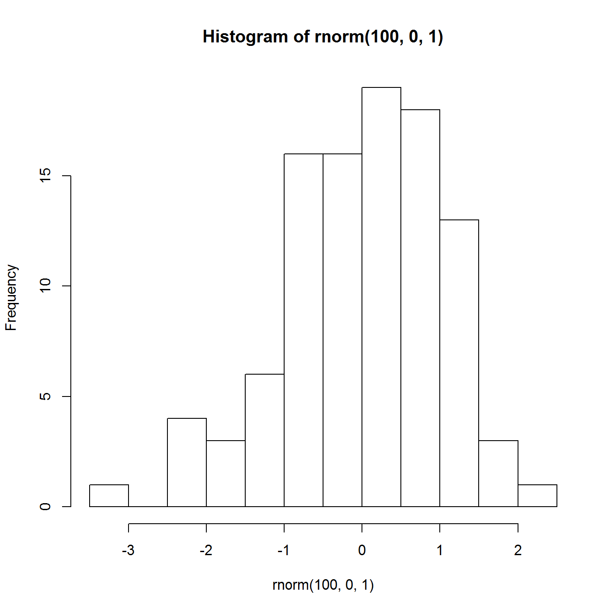

My shiny application can help you understand the effect of
- Number of samples (n)
- Mean (mean)
- Standard deviation (sd)
on a histogram of a random sample of normals.
Greg Michalopoulos
My shiny application can help you understand the effect of
on a histogram of a random sample of normals.
shinyUI(pageWithSidebar(
headerPanel("Standard Normal Distribution"),
sidebarPanel(
sliderInput("n", label = "# of random standard normal variables",
min = 1, max = 1000, value = c(100)),
numericInput("mean", "Distribution mean", 0, min = -100, max = 100, step = 1),
numericInput("sd", "Distribution standard deviation", 1, min = 0, max = 100, step = 1),
h4("Adjust the parameters to change the histogram of random normals."),
h4("Slider: Adjusts the number (n) of random normals."),
h4("Mean (mean) and standard deviation (sd) adjust the respective
parameter to the rnorm R function.")
),
mainPanel(
plotOutput("rnormPlot"),
textOutput("rnormMean"),
textOutput("rnormSd")
)
))
shinyServer(
function(input, output) {
set.seed(12345)
data <- reactive(rnorm(input$n, mean = input$mean, sd = input$sd))
output$rnormPlot <- renderPlot({
hist(data())
})
output$rnormMean <- renderPrint({paste("Mean: ", mean(data()))})
output$rnormSd <- renderPrint({paste("Std dev: ", sd(data()))})
}
)
Looks like this:
hist(rnorm(100, 0, 1))
